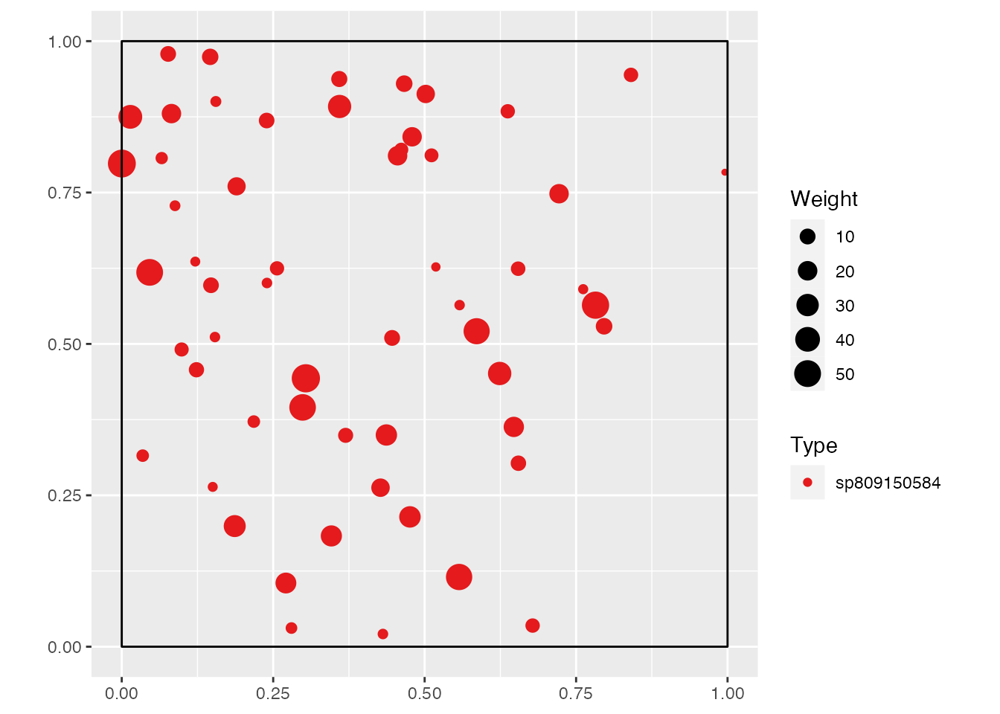
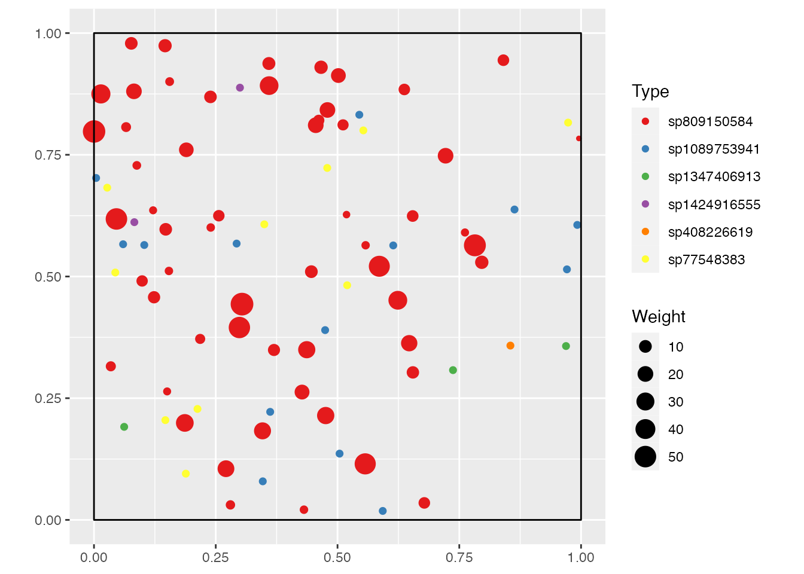

SpatDiv allows drawing random, spatialized communities as a whole, or species by species for more control.
The function rSpCommunity() draws a community (which is a weighted, marked, planar point pattern, i.e. a wmppp object defined in package dbmss) or a list of communities (an SpCommunities object) if argument n, the number of communities, is greater than 1.
library("SpatDiv")
spCommunity <- rSpCommunity(1, size = 30, S = 5)
autoplot(spCommunity)The random community obtained is made of 30 individuals in 5 species. All arguments are set by default:
Distribution.win) is a square of side 1.Spatial) of each species is multinomial (i.e. point locations are independent, but their number is fixed).Sizes) is 1.Several species abundance distributions (SAD) are available:
Distribution = "lnorm": log-normal distribution with parameter sd, the standard deviation of the logarithm of probabilities. The mean is forced by size, the number of individuals.Distribution = "lseries": log-series distribution with parameter alpha.Distribution = "geom": geometric distribution with parameter prob.Distribution = "bstick": broken stick distribution.The distribution of sizes is chosen by the argument Sizes:
Sizes = "Uniform": a uniform distribution between MinSize and MaxSize. By default, MinSize and MaxSize equal 1 so all sizes are set to 1.Sizes = "Exponential": a negative exponential distribution of rate \(-1/MeanSize\).Sizes = "Weibull": a Weibull distribution with parameters shape and scale. MinSize is added (i.e., it is the location parameter of the Weibull distribution with three parameters).The function rSpSpecies() draws a single species spatial pattern, which is a a wmppp object.
spSpecies <- rSpSpecies(50, Spatial = "Thomas", Sizes = "Exponential")
autoplot(spSpecies)
The point pattern of a a species is aggregated. It follows a Thomas point process with default arguments.
Available point processes are:
Binomial: points are draw independently like in a homogenous Poisson process but their number is forced to n.Thomas: points are clustered around centers whose density is kappa. mu is the average number of points in each cluster. scale is the standard deviation of the random displacement of points from the cluster centers.More complex spatial distributions can be simulated in package spatstat. Spatial can be an object of class ppp (a planar point pattern) obtained that way.
Spatial communities stored in wmppp and SpCommunities objects can be superimposed by the superimpose() function from package dbmss.
library("dbmss")
superimpose(spSpecies, spCommunity) %>%
autoplot()